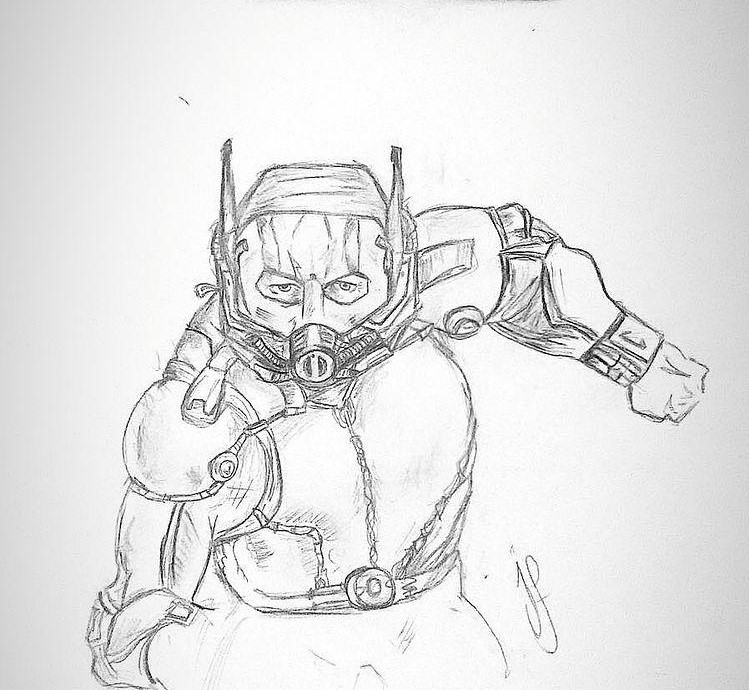
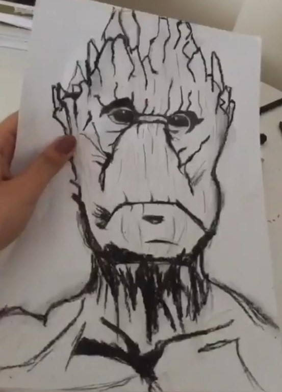
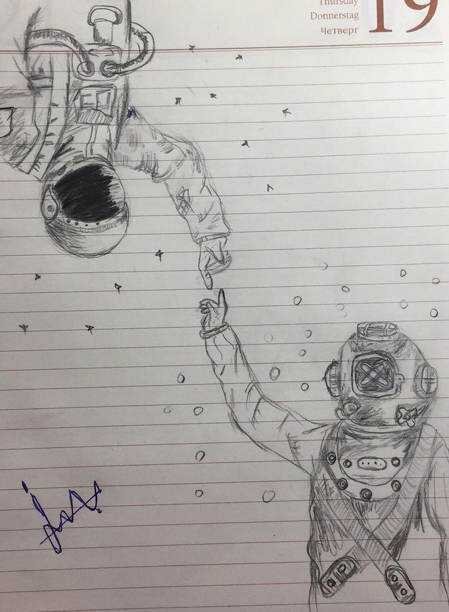
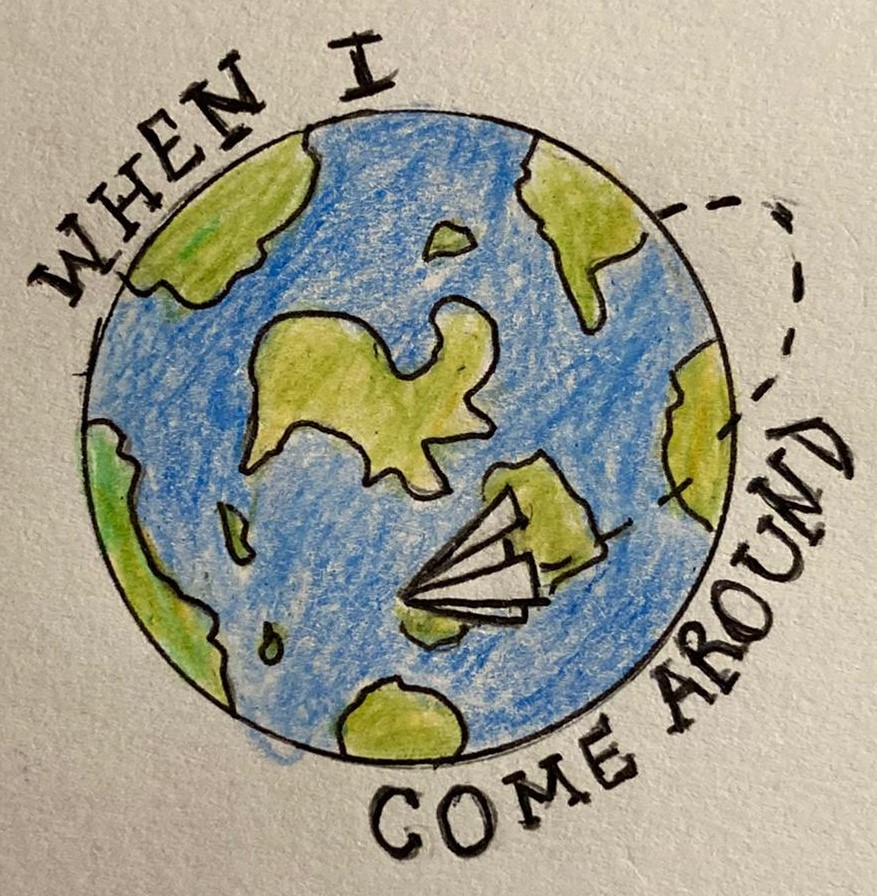

| Anasayfa | Hakkımda | İletişim |

Antman |
|
|  | Bugün sizler için uzun süreli araştırmalarımı ve yılların getirmiş olduğu eğitim ve öğretim tecrübelerimiz ile “Resim Çizim Teknikleri Nasıl Geliştirilir?” konusunda gerçekten işe yarayacak ve tescillenmiş bilgileri içeren bir yazı hazırladık.Bu yazıyı okuduktan sonra, güzel resim çizebilmek için bilmeniz gereken tekniklerin, nasıl geliştirileceği konusunda her şeyi bilecek ve istediğiniz her zaman güzel çizebilmek adına alıştırmalar yaparak, güzel resimler çizebileceksiniz. Dediğimiz gibi bu yazıda bulunan bilgilerin hepsi, öğrencilerimiz ve başarıları tarafından tescillenmiş, profesyonel ve kaliteli bilgilerdir. |
Groot |
|
|  |
Bu yazıda bulabileceğiniz konular şunlardır: ♦ Basit Şekilleri Çizmek ♦ Sürekli Gördüğünüz Şeyleri Çizmek ♦ Gölgelendirme Çalışmaları Yapmak Dilerseniz sizler için uzun süreli araştırmalarımı ve yılların getirmiş olduğu eğitim ve öğretim tecrübelerimiz ile “Çizim Teknikleri Nasıl Geliştirilir?” konusunda gerçekten işe yarayacak ve tescillenmiş bilgileri içeren bir yazı hazırladığımız yazımıza geçiş yapıp, kolay yoldan güzel çizebilmek için kullanılan tekniklerin geliştirilebilmesi için uygulanılması gereken her egzersizi ve yöntemi açıklayalım ki siz de güzel çizebilin. |
Venom |
|
 |
Güzel çizebilmek için bilmeniz gereken teknikleri geliştirebilmek için ihtiyacınız olan şey aslında uzun sürelerin vermiş olduğu çizim tecrübeleridir fakat resim çizmeye yeni başladıysanız ve bu yazıda bulunan uygulamaları, çalışma yöntemlerini ve egzersizlerini yaparsanız, kısa sürede gerçekten çok kaliteli ve etkili tecrübelere sahip olarak, kısa sürede güzel çizmeyi öğrenebileceksiniz. Dilerseniz sizler için bu uygulamaları, çalışma yöntemlerini ve egzersizlerini ayrı başlıklar altında inceleyerek devam edelim. |
Space |
 |
Genellikle geometri derslerinde kullanılan şekilleri çizmek, sizi gerçekten çok rahat geliştirecektir. Çizilme süreçleri kolay gözükse bile, çizilmeleri için tek çizgi darbeleri kullanmaya çalıştığınızda birden zorlaştığını görebilirsiniz. Dolayısıyla, çizim tekniklerinizi geliştirebilmek için basit şekilleri, düzenli olarak tekrar tekrar çizmek, sizin kaleminizi ve bileğinizi güçlendirir. |
Ryuk |
 |
Sürekli görülen nesnelerin ya da objelerin çizimi, diğerlerine göre daha kolaydır çünkü sürekli gördüğünüz bir şey aklınızda daha fazla yer eder ve bu durum da çiziminize yardımcı olacak bir faktördür.
|
World |
 |
Bu site İlayda Özbay tarafından yapılmıştır.© 2021